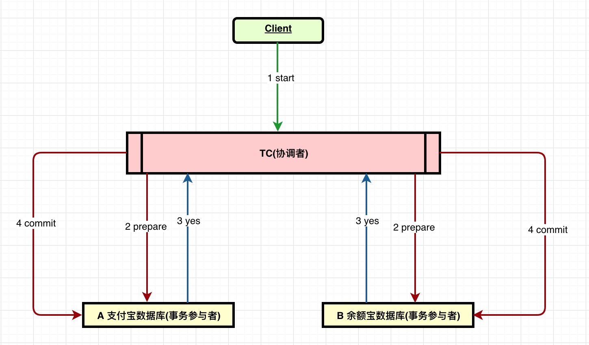
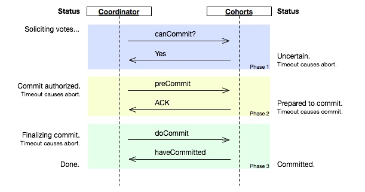

案例：分布式事务处理
从支付宝转账1万到余额宝 开始分析，解决数据一致性问题
分布式开放消息系统(RocketMQ)的原理与实践
- 概念
- 典型的分布式事务实例
- 处理方案0 本地事物(Localtransaction)
- 处理方案1 两阶段提交协议(Two-phase Commit,2PC)
- 处理方案2 三阶段提交协议
- 处理方案3 MQ避免分布式事物
概念
- 分布式数据一致性：
- 在数据有多份副本的情况下，如果网络、服务器或者软件出现故障，会导致部分副本写入成功，部分副本写入失败。这就造成各个副本之间的数据不一致，数据内容冲突，造成事实上的数据不一致。
- CAP定理:
- Consistency：一致性，这个和数据库ACID的一致性类似，但这里关注的所有数据节点上的数据一致性和正确性，而数据库的ACID关注的是在在一个事务内，对数据的一些约束。系统在执行过某项操作后仍然处于一致的状态。在分布式系统中，更新操作执行成功后所有的用户都应该读取到最新值。
- Availability：可用性，每一个操作总是能够在一定时间内返回结果。需要注意“一定时间”和“返回结果”。“一定时间”是指，系统结果必须在给定时间内返回。“返回结果”是指系统返回操作成功或失败的结果。
- Partition Tolerance：分区容忍性，是否可以对数据进行分区。这是考虑到性能和可伸缩性。
典型的分布式事务实例
跨行转账问题是一个典型的分布式事务，用户A向B的一个转账1000，要进行A的余额-1000，B的余额+1000，显然必须保证这两个操作的事务性。
类似的还有，电商系统中，当有用户下单后，除了在订单表插入记，还要在商品表更新库存等，特别是随着微服务架构的流行，分布式事务的场景更变得更普遍。下面以从支付宝转账1万到余额宝为例展开讨论
支付宝是一个系统 余额宝是一个系统
处理方案0 本地事物(Localtransaction)
本地事务不适合分布式情况，此处是为了说明解决方法列出
支付宝账户表：A(id,userId,amount)
余额宝账户表：B(id,userId,amount)
用户的 userId=1，从支付宝转账1万到也饿宝动作分为两步：
- 支付宝表扣除1万：
update A set amount=amount-10000 where userId=1; - 余额宝表增加1万：
update B set amount=amount+10000 where userId=1;
如何确保支付宝余额宝手指平衡呢？可以通过事物解决
Begin transaction
update A set amount=amount-10000 where userId=1;
update B set amount=amount+10000 where userId=1;
End transaction
commit;
非常正确，如果你使用spring的话一个注解(@Transactional)就能搞定上述事物功能
如果系统规模较小，数据表都在一个数据库实例上，上述本地事物方式可以很好地运行，
但如果系统规模较大， 比如支付宝账户表和余额宝账户表显然不会在同一个数据库实例上，他们往往分布在不同的物理节点上，这时本地事务就失去用武之地
处理方案1 两阶段提交协议(Two-phase Commit,2PC)
协调者 参与者
在两阶段提交协议中，系统一般包含两类机器（或节点）：一类为协调者（coordinator），通常一个系统中只有一个；另一类为事务参与者（participants，cohorts或workers），一般包含多个，在数据存储系统中可以理解为数据副本的个数。协议中假设每个节点都会记录写前日志（write-ahead log）并持久性存储，即使节点发生故障日志也不会丢失。协议中同时假设节点不会发生永久性故障而且任意两个节点都可以互相通信。
两个阶段的执行
请求阶段（commit-request phase，或称表决阶段，voting phase）
在请求阶段，协调者将通知事务参与者准备提交或取消事务，然后进入表决过程。
在表决过程中，参与者将告知协调者自己的决策：同意（事务参与者本地作业执行成功）或取消（本地作业执行故障）。提交阶段（commit phase）
在该阶段，协调者将基于第一个阶段的投票结果进行决策：提交或取消。
当且仅当所有的参与者同意提交事务协调者才通知所有的参与者提交事务，否则协调者将通知所有的参与者取消事务。
参与者在接收到协调者发来的消息后将执行响应的操作。

缺点
- 同步阻塞问题。执行过程中，所有参与节点都是事务阻塞型的。当参与者占有公共资源时，其他第三方节点访问公共资源不得不处于阻塞状态
- 单点故障。由于协调者的重要性，一旦协调者发生故障。参与者会一直阻塞下去。尤其在第二阶段，协调者发生故障，那么所有的参与者还都处于锁定事务资源的状态中，而无法继续完成事务操作。（如果是协调者挂掉，可以重新选举一个协调者，但是无法解决因为协调者宕机导致的参与者处于阻塞状态的问题）
- 数据不一致。在二阶段提交的阶段二中，当协调者向参与者发送commit请求之后，发生了局部网络异常或者在发送commit请求过程中协调者发生了故障，这回导致只有一部分参与者接受到了commit请求。而在这部分参与者接到commit请求之后就会执行commit操作。但是其他部分未接到commit请求的机器则无法执行事务提交。于是整个分布式系统便出现了数据部一致性的现象。
- 事务时间相对于变长了，锁定的资源时间也变长了，造成资源等待时间增加好多！
两阶段提交无法解决的问题
当协调者出错，同时参与者也出错时，两阶段无法保证事务执行的完整性。
考虑协调者再发出commit消息之后宕机，而唯一接收到这条消息的参与者同时也宕机了。
那么即使协调者通过选举协议产生了新的协调者，这条事务的状态也是不确定的，没人知道事务是否被已经提交。
处理方案2 三阶段提交协议
三阶段提交协议在协调者和参与者中都引入超时机制，并且把两阶段提交协议的第一个阶段拆分成了两步：询问，然后再锁资源，最后真正提交。

三个阶段的执行
- CanCommit阶段
- 3PC的CanCommit阶段其实和2PC的准备阶段很像。
- 协调者向参与者发送commit请求，参与者如果可以提交就返回Yes响应，否则返回No响应。
- PreCommit阶段
- Coordinator根据Cohort的反应情况来决定是否可以继续事务的PreCommit操作。根据响应情况，有以下两种可能。
- 假如Coordinator从所有的Cohort获得的反馈都是Yes响应，那么就会进行事务的预执行：发送预提交请求。Coordinator向Cohort发送PreCommit请求，并进入Prepared阶段。事务预提交。Cohort接收到PreCommit请求后，会执行事务操作，并将undo和redo信息记录到事务日志中。响应反馈。如果Cohort成功的执行了事务操作，则返回ACK响应，同时开始等待最终指令。
- 假如有任何一个Cohort向Coordinator发送了No响应，或者等待超时之后，Coordinator都没有接到Cohort的响应，那么就中断事务：发送中断请求。Coordinator向所有Cohort发送abort请求。中断事务。Cohort收到来自Coordinator的abort请求之后（或超时之后，仍未收到Cohort的请求），执行事务的中断。
- Coordinator根据Cohort的反应情况来决定是否可以继续事务的PreCommit操作。根据响应情况，有以下两种可能。
DoCommit阶段
该阶段进行真正的事务提交，也可以分为以下两种情况:
执行提交
- 发送提交请求。Coordinator接收到Cohort发送的ACK响应，那么他将从预提交状态进入到提交状态。并向所有Cohort发送doCommit请求。
- 事务提交。Cohort接收到doCommit请求之后，执行正式的事务提交。并在完成事务提交之后释放所有事务资源。
- 响应反馈。事务提交完之后，向Coordinator发送ACK响应。
- 完成事务。Coordinator接收到所有Cohort的ACK响应之后，完成事务。
中断事务
- Coordinator没有接收到Cohort发送的ACK响应（可能是接受者发送的不是ACK响应，也可能响应超时），那么就会执行中断事务。
三阶段提交协议和两阶段提交协议的不同
对于协调者(Coordinator)和参与者(Cohort)都设置了超时机制（在2PC中，只有协调者拥有超时机制，即如果在一定时间内没有收到cohort的消息则默认失败）。
在2PC的准备阶段和提交阶段之间，插入预提交阶段，使3PC拥有CanCommit、PreCommit、DoCommit三个阶段。
PreCommit是一个缓冲，保证了在最后提交阶段之前各参与节点的状态是一致的。
三阶段提交协议的缺点
s如果进入PreCommit后，Coordinator发出的是abort请求，假设只有一个Cohort收到并进行了abort操作，
而其他对于系统状态未知的Cohort会根据3PC选择继续Commit，此时系统状态发生不一致性。
处理方案3 MQ避免分布式事物
参考 分布式开放消息系统(RocketMQ)的原理与实践 中 【三、事务消息】
生活中场景：去清真牛肉面吃饭，点完拉面后，他们会给你一张小票，然后让你拿着小票到窗口排队取饭。 为什么将付钱和取饭两个动作分开？其中一个重要原因就是为了使他们的接待能力增强(并发量更高)
同理，当支付宝账户扣除1万后，我们只要生成一个凭证(消息)即可，这个凭证(消息)上写着"让余额宝账户增加1万"，只要保证这个凭证(消息)能可靠保存，我们最终是可以拿着这个凭证(消息)让余额宝账户增加1万的，即我们能依靠这个凭证(消息)完成最终数据的一致性
通过上面方式解决有两种方案：
业务与消息耦合的方式：
支付宝在完成扣款的同时，记录消息数据，这个消息数据与月舞数据保存在同一数据库实例里(消息记录表表名为message)
Begin transaction update A set amount=amount-10000 where userId=1; inert into message(userId,amount,status) values(1,10000,1); End transaction commit;上述事物能保证只要支付宝账户里被扣了钱，消息一定能保存下来
当上述事物提交成功后，我们通过实时消息服务将此消息通知余额宝，余额宝处理成功后发送回复成功消息，支付宝收到回复后删除该条消息数据
业务与消息解耦的方式：
- 支付宝在扣款事务提交之前，向实时消息服务请求发送消息，实时消息服务只记录消息数据，而不真正发送，只有消息发送成功后才会提交事物
- 当支付宝扣款事务被提交成功后，向实时消息服务确认发送，只有在得到确认发送指令后，实时消息服务才真正发送该消息
- 当支付宝扣款事务提交失败回滚后，向实时消息服务取消发送，在得到取消发送指令后，该消息将不会被发送
- 对于那些未确认的消息或者取消的消息，需要有一个消息状态确认系统定时去支付宝系统查询这个消息的状态并进行更新(进行这一步的原因： 假设支付宝扣款事务被成功提交后，系统挂了，此消息状态并未更新为“确认发送”，从而导致消息不能被发送)
- 优点：消息数据独立存储，降低业务系统与消息系统间的耦合
确定：一次消息发送需要两次请求，业务处理服务需要实现消息状态回查接口
--1. 先把(支付宝-10000)封装成一个消息(new Message()) --2. 然后把这个消息交到MQ服务器上 send(producer.send(new Message(), callBack)) --3. callBack 处理本地事务：在callBack中方法里： update A set amount=amount-10000 where userId=1; ... --4. 当你的本地事务处理完成(本地事务处理成功或失败 MQ再次确认的过程) 成功(向MQ发送COMMIT 这个类似 ConsumeConcurrentlyStatus.CONSUME_SUCCESS) 失败(向MQ发送ROLLBACK)